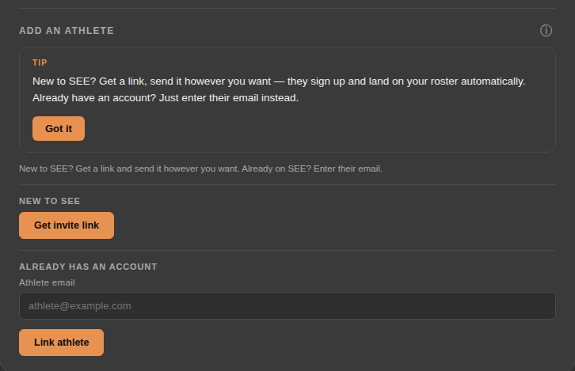
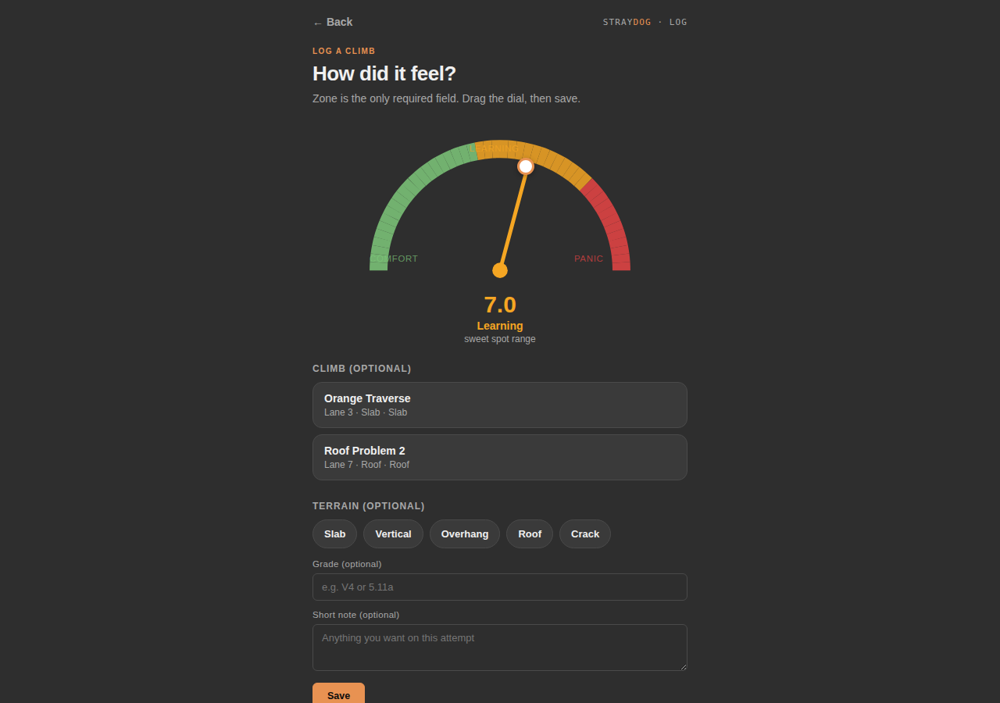

Coach
Using SEE as a coach.
Every athlete you're linked to feeds real data into your dashboard — not a survey they fill out once, but what they actually logged after every climb. This guide covers what you'll use most: adding an athlete, your roster, the three per-athlete insight panels, logging a climb yourself live at the wall, and assigning workouts.
Start here
Adding an athlete
The moment you finish creating your coach account, SEE prompts you straight into this — invite an athlete, or finish your own profile first. You can always come back to it later from the roster screen's Add an athlete panel.

- New to SEE? Tap Get invite link — it builds one personal link tied to you, and reuses that same link until someone actually signs up with it, so tapping it again never creates a duplicate you have to track. Send it however's easiest — text, email, whatever.
- When they sign up through that link, they land on your roster automatically. There's no separate "link the account" step on either side, and no email address to type in ahead of time.
- Already have their SEE account another way (they signed up on their own, say)? Skip the link — enter their email under Already has an account and tap Link athlete instead.
- The first time someone joins through your invite link, a banner appears on your roster — "[Name] just joined — assign her first climb" — tap it to open the assign wizard, pre-loaded with a small beginner-friendly shortlist so you're not starting from a blank library.
Then
The roster
Athletes linked to you. Tap any athlete to open their detail view — Progress, Gap, and Projects panels are front and center, with their assignments, session notes, and chat below.

- The top strip is your whole team at a glance: athlete count, total logged sessions, team-wide Learning % and send rate, and how many athletes are currently flagged — a real, threshold-based flag (3 or more panic-zone sessions in a rolling 7 days), not a guess.
- Each row shows that athlete's own zone-mix bar and, when it applies, a specific flag like "3 panic sessions this week" — nothing shown for an athlete with nothing to flag.
- The Add an athlete panel below the roster is where you invite someone new or link an existing account — see Adding an athlete above.
- Tap an athlete's name to open their detail view: Progress, Gap, and Projects panels first, with assignments, session notes, and chat below.
Athlete detail
Progress Over Time
Mental-zone mix and grade progression, by terrain, on the same 12-week rolling window — the same clock as the athlete's own journal. Open any athlete from the roster to see this.

- Zone share (%) shows how the Comfort/Learning/Panic mix has shifted week to week — a steady climb in Learning share generally reads as healthy pressure; a rising Panic share on its own is worth a direct conversation.
- Grade progression is split into two panels — Bouldering and Roped climbing. Bouldering plots on the V-scale; Roped plots on whichever single system — YDS, French, British, or E-grade — is that athlete's own dominant one, so a boulderer's V-grades and a route climber's letter grades never get averaged into one meaningless number. Sessions logged in a different roped system than the athlete's usual one are left off the Roped chart, with a note showing how many were excluded. Each plots separately per terrain type, so you can see technique gains a blended number would hide — e.g. steady gains on Vertical while Overhang stalls.
- The Roped climbing panel has a filter — All / Lead / Top Rope / Auto Belay — so you can isolate exactly how an athlete performs under one style, or spot a real gap between them (an athlete who climbs a full letter grade harder on Top Rope than on Lead is a concrete, common pattern worth a direct conversation, not a guess).
- This panel is explicitly descriptive, not diagnostic — it's the same underlying logs as the gap panel below, just sliced by calendar week instead of by terrain. They're not meant to produce matching numbers.
Athlete detail
Where's the gap?
Comfort vs. panic, broken down by terrain, across an athlete's full logged history. This is the fastest way to spot a real structural gap — not "they're inconsistent," but specifically where.

- The headline names the athlete's strongest and weakest terrain directly — "Most comfortable on Slab... Least comfortable on Overhang" — pulled straight from their real logged sessions, not a self-report.
- Below that, each terrain type gets its own comfort/learning/panic bar, so you can see the shape of the gap, not just which terrain is weakest.
- If an athlete's only logged one terrain so far, or their comfort and panic zones peak on the same terrain, the panel says so plainly instead of forcing a comparison that isn't real yet.
- This panel is all-time and terrain-only — no week-over-week trend here. For trend, use Progress Over Time above.
Athlete detail
Projects
Whatever an athlete has starred as a project shows up here, read-only — a fast, honest signal for what to actually train toward next, straight from what they're already working on themselves.
- Each row shows the climb's name, grade, terrain, and how many times they've attempted it — pulled from their own logged sessions, not something you have to ask them for.
- This list is entirely athlete-controlled — they star their own projects from their side of the app. Nothing here is something you set or edit from your dashboard.
- "No projects starred yet" is a plain empty state, not an error — most athletes won't have any starred until they've used the app a little.
At the wall
Logging a climb for an athlete
Standing at the wall watching an athlete work a route is exactly when you don't want to hand them a phone. From an athlete's detail page, tap Log a climb to open a fast, coach-side entry.

- Set the zone on the activation dial — a continuous slide from Comfort through Learning to Panic, not a 3-button pick — for where you think they were. Everything else (which climb, terrain, grade, a short note) is optional and can be skipped entirely.
- The athlete can go back later and set their own read on that same session — your reading stays visible as a faint reference mark, and whichever one they set last is what counts toward their own logs.
- If you've built out a gym climb catalog (wall/lane, angle, terrain), you can pick the exact route and it fills in the terrain and name for you.
- After saving, a Log another option keeps the same athlete and climb selection and only resets the zone — built for watching someone work the same route through several attempts back to back.
- Anything you log this way is visibly tagged Logged by coach everywhere it shows up — in the athlete's own journal and Home feed too — so it's never mistaken for their own self-log.
Programming
Assigning a workout
The New assignment button next to any athlete on the roster (see the roster screenshot above) opens the assign wizard — search the shared workout library or your own custom-built workouts, optionally set a due date, and it lands in their Home screen's "Due this week" list once it's due within 7 days (or overdue).
- You can assign something from the shared workout library or one of your own custom-built workouts — every assignment links to a real workout, there's no fully freeform option.
- Assignments with a linked workout get a real Start session button on the athlete's end, which opens the actual session builder pre-filled — not just a checkbox.
- Marking an assignment complete is a separate action from the athlete logging reps — completing the assignment and actually doing the work are tracked independently, on purpose.